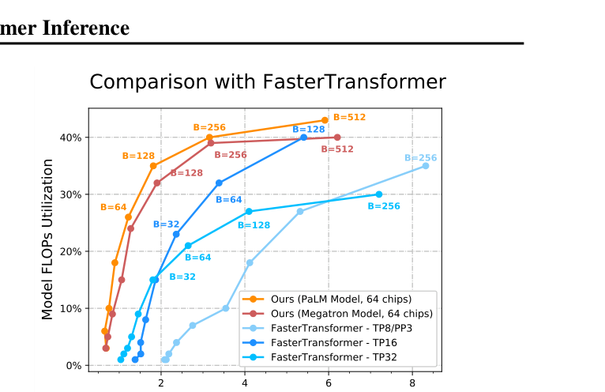
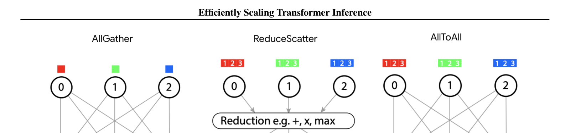

Reiner Pope, Sholto Douglas, Aakanksha Chowdhery, Jacob Devlin, James Bradbury, Anselm Levskaya, Jonathan Heek, Kefan Xiao, Shivani Agrawal, Jeff Dean arXiv:2211.05102 (2022)
译读说明：本页为非官方双语译读版。英文内容以 PDF 原文为基础，清理断词、连字及分页痕迹，并按网页阅读需要重整段落；个别句段在不改变技术含义的前提下作了合并或轻度改写，因此本页不是逐字校勘版。每个英文内容块后紧接对应中文译文。公式、变量、模型名称、数值、论文引用、图表编号与专有缩写尽量保留；参考文献书目信息按原文列出，不逐条翻译。
Abstract摘要
ENWe study the problem of efficient generative inference for Transformer models, in one of its most challenging settings: large deep models, with tight latency targets and long sequence lengths. Better understanding of the engineering tradeoffs for inference for large Transformer-based models is important as use cases of these models are growing rapidly throughout application areas. We develop a simple analytical model for inference efficiency to select the best multi-dimensional partitioning techniques optimized for TPU v4 slices based on the application requirements. We combine these with a suite of low-level optimizations to achieve a new Pareto frontier on the latency and model FLOPS utilization (MFU) tradeoffs on 500B+ parameter models that outperforms the FasterTransformer suite of benchmarks. We further show that with appropriate partitioning, the lower memory requirements of multiquery attention (i.e. multiple query heads share single key/value head) enables scaling up to 32× larger context lengths. Finally, we achieve a low-batch-size latency of 29 ms per token during generation (using int8 weight quantization) and a 76% MFU during large-batch-size processing of input tokens, while supporting a long 2048-token context length on the PaLM 540B parameter model.
ENScaling Transformer-based models to 100B+ (Brown et al., 2020; Kaplan et al., 2020; Rae et al., 2021; Hoffmann et al., 2022) and later 500B+ parameters (Chowdhery et al., 2022; Smith et al., 2022) has led to state-of-the-art results on natural language processing benchmarks. The practical utility of these large language models (LLMs) in a variety of applications makes them compelling for widespread use. While the sequence parallelism of the Transformer architecture enables highly parallel training, efficient deployment of these models is challenging in practice because generative inference proceeds one token at a time and the computation for each token sequentially depends on the previously generated tokens. Thus, models that support efficient training at scales of thousands of chips require careful attention to parallel layout and memory optimizations to unlock the scalability needed for efficient, low-latency inference. This paper focuses on a simple set of engineering principles that enable serving large-scale Transformer-based models efficiently in a variety of challenging production settings.
中将基于 Transformer 的模型扩展到 1000 亿参数以上（Brown et al., 2020；Kaplan et al., 2020；Rae et al., 2021；Hoffmann et al., 2022），随后再扩展到 5000 亿参数以上（Chowdhery et al., 2022；Smith et al., 2022），已经在自然语言处理基准上带来了最先进的结果。这些大型语言模型（large language models，LLMs）在多种应用中具有实际价值，因此很适合被广泛采用。Transformer 架构的序列并行性使训练能够高度并行，但高效部署这些模型在实践中仍然困难：生成式推理一次只产生一个 token，而每个 token 的计算都按顺序依赖先前已生成的 token。因此，即使某个模型能在数千芯片规模上高效训练，要获得高效、低延迟推理所需的可扩展性，仍必须仔细设计并行布局和内存优化。本文聚焦于一组简明的工程原则，它们可以在多种具有挑战性的生产环境中高效服务大规模 Transformer 模型。
ENWe consider the requirements of downstream applications for LLMs. Some applications, including interactive workloads like chatbots, involve tight latency constraints (Thoppilan et al., 2022). Others, including offline inference for scoring or distillation, emphasize high throughput and low cost per token at any latency.
中我们首先考虑 LLM 下游应用的需求。某些应用——例如聊天机器人等交互式工作负载——具有严格的延迟约束（Thoppilan et al., 2022）。另一些应用——例如用于打分或蒸馏的离线推理——则更强调高吞吐量和较低的每 token 成本，而不严格限制延迟。
ENWe discuss briefly what makes generative inference of LLMs challenging. First, large models have a large memory footprint both due to the trained model parameters as well as the transient state needed during decoding. The model parameters generally do not fit in the memory of a single accelerator chip. The attention key and value tensors of each layer, which we refer to as the KV cache, must also be stored in memory for the duration of decoding. Second, tight latency targets become especially challenging for generative inference given the much lower parallelizability of Transformer generation relative to training. The large memory footprint gives rise to a large amount of memory traffic to load the parameters and KV cache from high-bandwidth memory (HBM) into the compute cores for each step, and hence a large total memory bandwidth required to meet a given latency target. Finally, inference cost from the attention mechanism scales quadratically with input sequence length (Sukhbaatar et al., 2019; Choromanski et al., 2020; Dao et al., 2022).
中下面简要说明 LLM 的生成式推理为何困难。第一，大模型的内存占用很高，这既来自训练得到的模型参数，也来自解码期间所需的临时状态。模型参数通常无法装入单个加速器芯片的内存。每一层注意力的键和值张量——本文称为 KV 缓存——也必须在整个解码期间保留在内存中。第二，与训练相比，Transformer 生成的可并行程度低得多，因此严格的延迟目标对生成式推理尤其具有挑战性。庞大的内存占用会产生大量内存流量：每一步都要把参数和 KV 缓存从高带宽内存（HBM）加载到计算核心，因此若要达到给定延迟目标，就需要很高的总内存带宽。最后，注意力机制的推理成本会随输入序列长度呈二次增长（Sukhbaatar et al., 2019；Choromanski et al., 2020；Dao et al., 2022）。
ENWe found two keys to optimize LLMs for inference efficiency. First, we found it useful to build a powerful and abstract partitioning framework to enable reaching the limits of model parallel scaling given the limited parallelizability of Transformer inference. Within this framework, we analytically solve for the best partitioning strategy for a given model size with specific application requirements. This enables the user to intuitively understand the tradeoffs and select the best multi-axis tensor partitioning strategy, batch size and chip configuration for their application, in contrast to a black-box exhaustive search over partitioning strategies (Zheng et al., 2022; Xu et al., 2021). To fully realize the performance in practice, we use additional fine-grained control over cross-chip collective operations and low-level scheduling optimizations. Second, we apply memory optimizations and take full advantage of PaLM's multiquery attention to reduce unnecessary tensor overheads and maximize the batch size that fits on a given number of chips, enabling higher throughput.
中我们发现，优化 LLM 推理效率有两个关键。第一，考虑到 Transformer 推理的并行能力有限，需要建立一个能力强且抽象的划分框架，才能逼近模型并行扩展的极限。在该框架中，我们针对给定模型规模和具体应用需求，通过分析求解最佳划分策略。与把所有划分策略作为黑箱进行穷举搜索（Zheng et al., 2022；Xu et al., 2021）相比，这使用户能够直观理解各种权衡，并为自己的应用选择最佳多轴张量划分策略、批量大小和芯片配置。为了在实践中真正达到分析所预期的性能，我们还对跨芯片集合通信进行更细粒度的控制，并采用底层调度优化。第二，我们应用内存优化，充分利用 PaLM 的多查询注意力，以减少不必要的张量开销，并最大化给定芯片数量可容纳的批量大小，从而提升吞吐量。
ENThe primary goal of this paper is to provide a set of engineering principles for how best to partition a model in order to scale Transformer inference. In other words, how is the performance of different partitioning strategies affected by changes in model size, sequence length, and number of hardware chips? How does the optimal partitioning strategy change when trading off between latency and throughput? What is the intuitive and mathematical reasoning behind these effects? As we show in later sections, the right tradeoffs and strategies change as model size, sequence length, and application requirements for latency and throughput targets change, so having a framework that enables easy expression of different strategies and choices is important.
ENIn Section 2, we describe the specific metrics and tradeoffs we use to compare different partitioning strategies. In Section 3.1, we provide an overview of partitioning principles for large language models. In the remainder of Section 3, we describe a number of specific partitioning strategies, with an empirical validation on the PaLM family of large language models in Section 4.
ENFor a state-of-the-art 540B parameter dense model running on 64 TPU v4 chips, we achieve a low-batch-size latency of 29 ms per token during generation (with int8 weight quantization) and a 76% MFU during large-batch-size processing of input tokens while supporting a large context length of 2048 tokens. Figure 1 (left) shows our performance for generating text using the PaLM models. For an interactive application such as a chatbot running on PaLM 540B with int8 weights, our implementation on 64 TPU v4 chips can process 64 tokens of text from a user, consult a cached conversation history of 1920 tokens, and generate a 64-token response in a total of 1.9 seconds. For an offline throughput-oriented application, our implementation can process 1984 tokens of input and generate 64 tokens of output, for huge numbers of examples, with an overall FLOPS efficiency of 73%. Table 2 shows more details on a few specific scenarios.
Figure 1: Cost versus latency for PaLM models at context length 2048. Each line shows an efficiency–latency Pareto frontier. C is chip count and B is batch size. Left: per-token latency while generating 64 tokens after the context has been processed. Right: time to process 2048 input tokens, excluding output generation.
ENScaling up model sizes can unlock new capabilities and applications but has fundamental tradeoffs in terms of inference cost. We measure the inference cost in terms of the following metrics: latency, throughput, and model FLOPS utilization. The latency is the total time for an inference and can be broken down into the time to process the input tokens present at the start of the inference (which we call “prefill”) and the time to autoregressively generate output tokens (which we term “decode”). The decode latency can also be measured “per step”, i.e. divided by the number of tokens in each sequence. The throughput of prefill or decode is the number of tokens processed or generated per second. The model FLOPS utilization (MFU) is the ratio of the observed throughput to the theoretical maximum throughput if the benchmarked hardware setup were operating at peak FLOPS with no memory or communication overhead.
ENLarger models do not fit on a single accelerator chip and need to be partitioned across many accelerator chips to fit in memory. This also enables us to divide the memory and compute costs described below over all the chips, but comes at the cost of introducing chip-to-chip communication.
ENMemory costs. We store tensors such as weights and the KV cache in on-device high-bandwidth memory (HBM). While there are other tensors that pass through the HBM, their memory footprint is much smaller, so we focus on just these two largest groups of tensors. These tensors need to be transferred from HBM to the compute cores of the chip once per forward pass (prefill or decode step) of the model. This takes a certain amount of time, which we call the “memory time.” At small batch sizes and sequence lengths, the time to load weights dominates. At larger batch sizes and sequence lengths (e.g. 2048+ tokens with batch size 512+), the time to load the KV cache dominates.
ENCompute costs. An N-parameter decoder-only model requires 2N matmul FLOPs in the forward pass per token seen because each matmul performs one multiplication and one addition per pair of input token and parameter values in the forward pass (Kaplan et al., 2020). If all chips were running at peak FLOPS, these matmuls would take a certain amount of time, which we call the “compute time.” The matmuls in the attention mechanism typically add a much smaller number of FLOPs per token for large models and can often be excluded. Even though the computational cost of attention is relatively small, it can still account for a significant fraction of memory capacity and bandwidth costs, since (unlike the weights) the KV cache is unique for each sequence in the batch.
中计算成本。对于一个包含 N 个参数的仅解码器模型，每处理一个 token，其前向传播需要约 2N 次矩阵乘 FLOP，因为对于输入 token 值与参数值的每一对组合，矩阵乘都会执行一次乘法和一次加法（Kaplan et al., 2020）。如果所有芯片都以峰值 FLOPS 运行，这些矩阵乘需要一定时间，本文称之为“计算时间”。对于大模型，注意力机制中的矩阵乘通常每 token 只增加少得多的 FLOP，因此往往可以忽略。然而，注意力的计算成本虽相对较小，仍可能占据相当大的内存容量和带宽成本，因为与权重不同，批量中的每个序列都有自己独有的 KV 缓存。
2.1 Expected tradeoffs and challenges2.1 预期的权衡与挑战
ENBoth the weight-loading part of the memory time and the non-attention compute time are proportional to the model size and inversely proportional to the number of chips. However, for a given partitioning layout, the time needed for chip-to-chip communication decreases less quickly (or not at all) with the number of chips used, so it becomes an increasingly important bottleneck as the chip count grows. We consider some scenarios where these tradeoffs become especially challenging.
ENIf an application requires the lowest possible latency, we need to apply more chips and partition the model in as many ways as we profitably can. Lower latency can often be achieved with smaller batch sizes, but smaller batch sizes also result in worse MFU, resulting in a higher total cost (in terms of chip-seconds or dollars) per token.
ENIf an application requires generating text with long attention contexts, it substantially increases the inference time. For a 500B+ model with multihead attention, the attention KV cache grows large: for batch size 512 and context length 2048, the KV cache totals 3 TB, which is 3 times the size of the model's parameters. The on-chip memory needs to load this KV cache from off-chip memory once for every token generated, during which the computational core of the chip is essentially idle.
ENIf an application requires offline inference and latency is not a concern, the primary goal is to maximize per-chip throughput (i.e., minimize total cost per token). It is most efficient to increase the batch size because larger batches typically result in better MFU, but certain partitioning strategies that are not efficient for small batch sizes become efficient as the batch size grows larger.
ENWe briefly introduce the inference setup and notation. We consider a Transformer model with n_params parameters laid out for inference on n_chips chips. The model has model (or embedding) dimension d_model (or E), feedforward intermediate dimension d_ff (or F), and n_heads (or H) heads.
ENEach example in a batch of B sequences has L_input tokens of input text, and generates L_gen tokens of output text. Since the input tokens are all present at the start of the inference, we can run the model over all B × L_input tokens in parallel, in a single forward pass over all the tokens. We call this step prefill. The output tokens are generated autoregressively, with a sequential loop of L_gen steps. Each step consists of a single forward pass through the model, after which we sample one new token for each of the B examples in the batch. This loop is known as generation or decode. Since prefill can run in parallel over L_input, but decode must run sequentially over L_gen, the two phases have different performance characteristics and we analyze them separately.
3 Partitioning for Inference Efficiency3 面向推理效率的模型划分
ENWe must partition large models over many chips in order to fit weight and activation tensors in memory and fit compute and memory time within latency requirements. Model partitioning introduces communication between chips, and different partitioning strategies for a given model involve different patterns and amounts of communication. In this section, we detail several high-level strategies for partitioning a large Transformer language model for cost-effective and latency-effective inference.
3.1 Partitioning notation and communication collectives3.1 划分记号与集合通信
ENWe describe the partitioning layouts in this section based on a TPU v4 system with 3D torus topology X × Y × Z. Following Xu et al. (2021), we use subscripts to specify the tensor dimension that is partitioned. For example, notation BLE_xyz means that the last dimension E of a tensor of logical shape BLE is split into X × Y × Z partitions, where x, y and z refer to the physical TPU v4 axes, and the per-chip tensor is of shape [B, L, E/(X × Y × Z)]. Here B, E and F refer to batch, model embedding and MLP feedforward dimension. We use L to refer to the sequence length and explicitly specify the prefill or generation phase.
中本节以具有 X × Y × Z 三维环面拓扑的 TPU v4 系统为基础描述划分布局。沿用 Xu et al.（2021）的记法，我们用下标指出被划分的张量维度。例如，BLE_xyz 表示一个逻辑形状为 BLE 的张量，其最后一维 E 被拆成 X × Y × Z 份，其中 x、y、z 对应 TPU v4 的物理轴；每个芯片上的张量形状为 [B, L, E/(X × Y × Z)]。这里 B、E、F 分别表示批量维度、模型嵌入维度和 MLP 前馈维度。L 表示序列长度，并会明确指出是在预填充还是生成阶段。
ENIf a tensor is replicated over an axis x, that axis is omitted from the notation. We also use a suffix “partialsum-x” to indicate that a given tensor has been contracted (summed) locally on each chip over some axis not represented in the shape, but still needs to be summed across the chips in the TPU x axis—creating a tensor replicated over x—before the result is meaningful.
中如果一个张量在某条轴 x 上被复制，记号中就省略该轴。我们还使用后缀“partialsum-x”，表示给定张量已经在每个芯片本地沿某个未体现在形状中的轴完成收缩（求和），但结果仍需跨 TPU 的 x 轴芯片继续求和——并由此得到一个在 x 轴上复制的张量——之后才具有完整意义。
ENWe use several communication collectives originating from MPI (Clarke et al., 1994). The all-reduce(x) primitive sums a partial-sum tensor such as BLE_yz(partialsum-x) across sets of chips in the x axis of the torus and broadcasts the sum back to all the involved chips, returning output of shape BLE_yz. For the reasons outlined in Rajbhandari et al. (2020), we typically split all-reduce into two phases: a reduction phase and a broadcast phase. The reduction phase is called reduce-scatter(x), and it sums BLE_yz(partialsum-x) tensors across sets of chips in the x axis but produces an output that is sharded rather than replicated over the chips in that axis, in a layout such as B_xLE_yz or BLE_xyz. The broadcast phase is called all-gather(x), and it broadcasts and concatenates the tensor BLE_xyz to all chips in the x axis, producing an output X times larger than its input and replicated over the x axis. The all-to-all collective shifts sharding from one tensor dimension to another, for example BLH_xQ → B_xLHQ, using direct communication between every source–destination pair. Figure A.1 illustrates these primitives.
中本文使用若干源自 MPI（Clarke et al., 1994）的集合通信操作。all-reduce(x) 会在环面 x 轴的一组芯片间，对 BLE_yz(partialsum-x) 之类的部分和张量求和，并把总和广播回所有参与芯片，得到形状为 BLE_yz 的输出。基于 Rajbhandari et al.（2020）所述原因，我们通常把 all-reduce 拆成两个阶段：归约阶段和广播阶段。归约阶段称为 reduce-scatter(x)（归约-散射）：它在 x 轴芯片组上对 BLE_yz(partialsum-x) 求和，但输出不会在该轴上复制，而是以 B_xLE_yz 或 BLE_xyz 等布局分片。广播阶段称为 all-gather(x)（全收集）：它把 BLE_xyz 广播并拼接到 x 轴上的所有芯片，使输出大小变为输入的 X 倍，并在 x 轴上复制。all-to-all（全互换）则把分片从一个张量维度转移到另一个维度，例如 BLH_xQ → B_xLHQ；它在每一对源和目标之间进行直接通信。图 A.1 展示了这些原语。
ENOverview. When a model does not fit on a single chip, the simplest partitioning strategy is 1D weight-stationary, where each E × F weight matrix is partitioned (or sharded) among n_chips along the E or F axis. Each weight shard is multiplied by the appropriate activation shard on each chip, and the results are aggregated between the chips with an all-gather and/or reduce-scatter. Additionally, when computing two consecutive matrix multiplications—as in a Transformer MLP block—there is a “trick” (Shoeybi et al., 2019) to avoid any cross-chip communication between the matmuls: if the first matmul is partitioned by the output axis, the resulting activation shard on each chip will be exactly the one needed to compute the second matmul partitioned by the input axis.
中概述。当模型无法装入单个芯片时，最简单的划分策略是一维权重驻留（1D weight-stationary）：每个 E × F 权重矩阵沿 E 轴或 F 轴被划分（分片）到 n_chips 个芯片上。每个芯片将自己的权重分片与相应的激活分片相乘，再通过 all-gather 和/或 reduce-scatter 在芯片之间聚合结果。此外，在连续计算两个矩阵乘时——例如 Transformer 的 MLP 模块——可以使用一个“技巧”（Shoeybi et al., 2019）来避免两个矩阵乘之间的任何跨芯片通信：若第一个矩阵乘按输出轴划分，那么每个芯片得到的激活分片，正好就是按输入轴划分的第二个矩阵乘所需的分片。
ENAs we parallelize the computation across more chips, the memory latency and compute latency decrease, often nearly linearly. However, the communication latency remains roughly constant independent of the number of chips used, since the entire activation matrix is aggregated across chips for every pair of matrix multiplications. As the number of chips grows larger, communication becomes a bottleneck.
ENDetails. We consider as a baseline the layout where the weights and activations of the feedforward layer are partitioned over n_chips along the d_ff dimension, as in Megatron (Shoeybi et al., 2019). Figure 2(a) shows the partitioning layout for this case. On the TPU v4's 3D torus topology the partition layout for weights is EF_xyz and F_xyzE: they are split into X × Y × Z = n_chips partitions across the physical TPU axes. The weights are kept stationary in each chip, and the activations are transferred between chips to match the weight layout, requiring one all-gather and one reduce-scatter.
中细节。我们以 Megatron（Shoeybi et al., 2019）采用的布局为基线：前馈层的权重和激活沿 d_ff 维度划分到 n_chips 个芯片上。图 2(a) 展示了该布局。在 TPU v4 的三维环面拓扑上，权重布局为 EF_xyz 和 F_xyzE，也就是沿物理 TPU 轴拆成 X × Y × Z = n_chips 份。权重固定驻留在各自芯片上，激活则在芯片之间传输以匹配权重布局，因此需要一次 all-gather 和一次 reduce-scatter。
ENIn this 1D weight-stationary strategy, each chip gets inputs and outputs of shape BLE in the reduce-scatter and all-gather respectively. The communication cost is derived in Appendix A.1. The resulting communication time is:
中在这种一维权重驻留策略中，每个芯片在 reduce-scatter 和 all-gather 中分别接收形状为 BLE 的输入与输出。附录 A.1 推导了这些操作的通信成本，最终通信时间为：
T_comm = 2 B L E / network bandwidth
Communication time for the 1D weight-stationary feedforward layout.
ENOverview. For a larger number of chips, a more economical strategy partitions each E × F weight matrix along both the E and F axes so that each shard is roughly square. For example, if E = 1024, F = 4096 and n_chips = 64, we shard four ways along E and sixteen ways along F, so each chip stores a 256-by-256 chunk of the weight matrix and activations are transferred between chips. This is called 2D weight-stationary.
中概述。当芯片数量较多时，更经济的策略是同时沿 E 和 F 两个轴划分每个 E × F 权重矩阵，使每个分片大致为正方形。例如，当 E = 1024、F = 4096、n_chips = 64 时，可以沿 E 拆成 4 份、沿 F 拆成 16 份，使每个芯片存储一个 256 × 256 的权重块，而激活在芯片间传输。这称为二维权重驻留（2D weight-stationary）。
ENThe total compute cost is the same as for 1D weight-stationary, but communication is much more efficient: when multiplying an activation matrix through a set of consecutive weight matrices, we can alternate which of the two axes performs activation aggregation between each multiplication. With the correct partitioning, each chip always has the activation shard necessary to multiply with its weight shard, without ever holding a fully replicated copy of the activation tensor. Since each axis is partitioned on O(√n_chips), communication time scales as O(1/√n_chips) rather than remaining constant. Thus, even if the 2D layout becomes communication-limited at a certain chip count and batch size, adding more chips can continue to reduce latency because communication time keeps falling.
ENHowever, while the 1D weight-stationary “trick” requires aggregation only over the d_model dimension, 2D weight-stationary requires alternating aggregation over the d_model and d_ff dimensions. Therefore, 2D weight-stationary becomes more communication-efficient when √n_chips > d_ff/d_model. Since typically d_ff = 4 d_model, this occurs when n_chips > 16.
ENDetails. Figure 2(b) shows the partitioning layout. Whereas the 1D weight-stationary layout runs its all-gather and reduce-scatter with unsharded shape BLE per chip, this 2D layout partitions d_model so that communication volume for d_ff partitioning is reduced from BLE to BLE/X. This comes at the cost of introducing a second pair of reduce-scatter and all-gather operations, whose cost must be balanced against the existing communication.
中细节。图 2(b) 展示了该划分布局。一维权重驻留在每个芯片上以未分片的 BLE 形状执行 all-gather 和 reduce-scatter；二维布局则进一步划分 d_model，使 d_ff 划分对应的通信量从 BLE 降为 BLE/X。其代价是引入第二组 reduce-scatter/all-gather 操作，因此必须在新增通信和原有通信之间取得平衡。
ENThe weight layout is E_xF_yz: d_model is split into X partitions and d_ff into Y × Z partitions, where X × Y × Z = n_chips. The input activation layout is the same as in the previous section. The partitioned weights again remain stationary on their chips, but because of the 2D layout, activation communication includes two all-gathers and two reduce-scatters.
中权重布局为 E_xF_yz：d_model 被拆成 X 份，d_ff 被拆成 Y × Z 份，且 X × Y × Z = n_chips。输入激活的布局与上一节相同。分片权重仍固定驻留在各自芯片上，但由于采用二维布局，激活通信包含两次 all-gather 和两次 reduce-scatter。
ENAppendix A.2.1 derives the optimal values of X, Y and Z that minimize total communication time. Assuming d_ff = 4 × d_model, the minimum is achieved with X = 0.5 × √n_chips and YZ = 2 × √n_chips. The resulting total communication time is:
ENOverview. In the weight-stationary strategies above, each chip stores one shard of every weight matrix and is responsible for multiplying its “stationary” weight shard by each corresponding activation shard. The output of every per-chip matrix multiplication must then be aggregated between chips before it can be used by subsequent operations.
ENAs batch size and sequence length grow, however, the output activations may become much larger than the weights. When that happens, it can be more economical to keep activations stationary on each chip and transfer weights instead. For very large batches, the best choice is to keep activations fully stationary between sequential matrix multiplications, which requires fully transferring weights between all chips. We call this XYZ-weight-gathered. For moderate batch sizes, a hybrid approach in which both weights and activations are partially transferred along different axes is beneficial; we call these X-weight-gathered and XY-weight-gathered.
中不过，随着批量和序列长度增长，输出激活可能远大于权重。此时，让激活驻留在各芯片上而改为传输权重，可能更经济。对于非常大的批量，最佳方案是在连续矩阵乘之间让激活完全驻留不动，这要求在所有芯片之间完整传输权重；我们称之为 XYZ 权重聚合（XYZ-weight-gathered）。对于中等批量，更有利的是混合方案：权重和激活分别沿不同轴进行部分传输；本文称为 X 权重聚合和 XY 权重聚合。
ENDetails. Figure 2(c) shows the XY-weight-gathered layout. A key aspect of the chosen layout is that weights start in the same E_xF_yz layout as in 2D weight-stationary, so the same weight layout can be used for weight-gathered during prefill and weight-stationary during decoding. Just before the einsums, the weight tensors are all-gathered over the X and Y axes, with communication volume EF/Z. This adds communication relative to the weight-stationary layout, but reduces activation communication: one reduce-scatter/all-gather pair is skipped, and the volume on the other pair drops from BLE/X to BLE/(XY).
ENChanging the relative sizes of X, Y and Z trades off weight communication against activation communication and can minimize total communication volume. Because the weights are shared between the weight-stationary and weight-gathered layouts, however, we must match the X, Y and Z choices made for weight-stationary. Instead, we select among several variants of the weight-gathered layout. Figure 2(c) uses all-gather(xy) for weights and B_xyLE_z batch partitioning for activations. Other variants use all-gather(x) or all-gather(xyz), with B_xLE_yz or B_xyzLE activation layouts respectively. Figure A.2 shows all three.
ENFigure 3 shows how the communication-optimal configuration switches between these layouts as batch size grows. While 2D weight-stationary minimizes communication at low tokens per batch, different weight-gathered layouts become optimal at larger token counts. This highlights the importance of selecting different inference configurations for different application goals.
ENThe asymptotic scaling is as follows. Let N be the number of chips across which weights are all-gathered: N = X for X-weight-gathered, N = XY for XY-weight-gathered, and N = XYZ for XYZ-weight-gathered. Total communication is minimized by N = √(BL n_chips/F), as derived in Appendix A.2.2. The total communication time is:
中其渐近缩放关系如下。令 N 表示执行权重 all-gather 的芯片数量：对于 X 权重聚合，N = X；对于 XY 权重聚合，N = XY；对于 XYZ 权重聚合，N = XYZ。附录 A.2.2 推导出，当 N = √(BL n_chips/F) 时总通信量最小。总通信时间为：
T_comm = 4 E √(B L F) / (√n_chips × network bandwidth)
Here BL is the total number of tokens in the batch.
其中 BL 是批量中的 token 总数。
ENCommunication time for the weight-stationary layout is linear in BL, whereas communication time for the weight-gathered layout is linear in √BL. Therefore, weight-gathered becomes cheaper when batch size and prefill sequence length are sufficiently large.
Figure 3: Communication volume versus tokens per batch for the feedforward layer. As batch size grows, all-gathering weights over progressively more chips minimizes communication.
ENMultihead attention can be parallelized in essentially the same ways as a feedforward layer, with n_heads replacing d_ff. But inference with multihead attention incurs significant memory-capacity and bandwidth costs to store and load the KV cache, and these costs can dominate the rest of inference at large batches or long context lengths.
ENAn alternative called multiquery attention (Shazeer, 2019; Chowdhery et al., 2022) still emits n_heads heads for the query tensor, but only a single head for the key and value tensors. This key/value head is shared across all n_heads query heads. It reduces KV-cache tensor size, and therefore memory time spent loading the cache, by a factor of n_heads. But it also removes an axis otherwise available for parallelism, so the KV cache and related computations must be partitioned differently.
ENPartitioning strategy. The key design consideration is to minimize the memory time spent repeatedly loading the KV cache, which can dominate inference cost. Projection matrices with an n_heads dimension—W_Q and W_O in multiquery attention, plus W_K and W_V in multihead attention—should use the same layout as the feedforward layer.
ENFigure 4(a) shows a typical layout for multihead attention matching the 2D weight-stationary feedforward layout. Q, K and V activations are partitioned over n_heads into n_chips partitions when n_heads is a multiple of n_chips. When n_chips exceeds n_heads, attention heads are partially replicated. The most similar layout for multiquery attention, shown in Figure 4(b), treats its KV cache like the multihead case. Even though the key and value tensors are shared across heads, they must be replicated on every chip, so the memory savings of multiquery attention are lost.
ENWe instead propose partitioning the Q, K and V matrices of multiquery attention over the batch B dimension into n_chips partitions. Figure 4(c) shows that this reduces the per-chip memory cost of loading the KV cache by a factor of n_chips, and therefore reduces memory time by the same factor. Compared with head-sharding, the proposed strategy adds communication to reshard the input activation tensors using an all-to-all collective, as shown in Figure 5(b).
ENDuring autoregressive generation there is only one token per example in the Q, K and V tensors, whereas the KV cache contains many tokens—perhaps 2048. Since the cache is orders of magnitude larger than the Q, K and V tensors, it is highly profitable to spend all-to-all communication time on the small tensors in order to save memory time on the large cache.
ENDuring prefill it is usually not profitable to shard attention over batch. The Q tensor contains many tokens—perhaps 2048—all querying the same K and V tensors. The cost of loading K and V is amortized across all tokens in Q and is therefore usually not a bottleneck. For prefill we consequently use the sharded-over-heads layout.
ENWith the proposed partitioning layout, multiquery attention supports larger batch sizes and sequence lengths, increasing throughput in addition to reducing latency through lower memory time. As Section 4.2 shows, the savings are an order of magnitude compared with multihead attention.
Figure 4: Multiquery attention has lower KV-cache loading cost when sharded over the batch dimension. The diagram contrasts multihead head-sharding, inefficient multiquery head-sharding, and multiquery batch-sharding.
ENWe discuss inference-latency gains from the “parallel” formulation of each Transformer block (Wang and Komatsuzaki, 2021), as used in PaLM (Chowdhery et al., 2022), instead of the standard “serialized” formulation. In the parallel form, the feedforward and attention layers are computed in parallel from the layer-normalized input and then summed to obtain the output.
中本节讨论每个 Transformer 模块采用“并行”形式（Wang and Komatsuzaki, 2021）而非标准“串行”形式时获得的推理延迟收益；PaLM（Chowdhery et al., 2022）即采用这种并行结构。在并行形式中，前馈层和注意力层都从经过层归一化的输入出发并行计算，随后将两者相加得到输出。
ENThe parallel formulation has several benefits. First, each layer has only one layer normalization instead of two, reducing latency at small batch sizes. Second, the input matrices of the feedforward layer can be fused with the attention query projection W_Q; the key/value projection matrices W_K and W_V can be fused with each other; and the feedforward output matrix can be fused with the attention output projection W_O. These fusions improve FLOPS utilization because larger matrix multiplications execute more efficiently on accelerators. More importantly, they eliminate one of the two all-reduce operations per Transformer layer required for d_ff/n_heads parallelism, cutting communication time over that axis in half.
ENWe use the Looped CollectiveEinsum technique from Wang et al. (2023) to run communication concurrently with computation. This partially or fully hides the communication time of most reduce-scatter and all-gather operations in Figures 2 and 5. For every reduce-scatter in those figures, we could reduce-scatter into a batch or sequence dimension (B or L), or into the hidden dimension (E or F). We chose the latter because it exposes more effective opportunities for Looped CollectiveEinsum, whereas Korthikanti et al. (2022) chose the former to avoid communication in layer normalization.
中我们采用 Wang et al.（2023）的 Looped CollectiveEinsum 技术，让通信与计算并行执行，从而部分或完全隐藏图 2 和图 5 中大多数 reduce-scatter 与 all-gather 的通信时间。对于这些图中的每个 reduce-scatter，可以把结果分片到批量或序列维度（B 或 L），也可以分片到隐藏维度（E 或 F）。我们选择后者，因为它能为 Looped CollectiveEinsum 暴露更多有效的重叠机会；Korthikanti et al.（2022）则选择前者，以避免层归一化中的通信。
ENCollectiveEinsum loops account for the overwhelming majority of inference latency, so we invested considerable effort in maximizing their performance. First, using the underlying asynchronous CollectivePermute APIs of Wang et al. (2023), we developed several CollectiveEinsum variants optimized for different scenarios: latency versus throughput, different numbers of torus axes, and fusion with different input/output collectives. Second, we explicitly match communication collectives with the matrix multiplications with which they should be fused, maximizing potential overlap. These optimizations delivered about 1.4× better performance than the simpler compiler-partitioned-and-scheduled implementation with which we began. Some weight-gathered layouts would run out of memory without them.
中CollectiveEinsum 循环占据了推理延迟的绝大部分，因此我们投入了大量工作优化其性能。第一，基于 Wang et al.（2023）底层的异步 CollectivePermute API，我们开发了多种 CollectiveEinsum 变体，分别针对延迟或吞吐量、不同数量的环面轴，以及与不同输入/输出集合通信的融合进行优化。第二，我们显式匹配集合通信与应当和它融合的矩阵乘，以最大化通信—计算重叠。相较于最初使用的、由编译器简单划分和调度的实现，这些优化带来了约 1.4 倍性能提升。没有这些优化，某些权重聚合布局甚至会耗尽内存。
ENWe also use better in-memory tensor layouts to minimize padding and copying during matrix multiplication; faster top-k/top-p implementations for decode sampling; faster base-2 implementations of Softmax and Swish; and support for incremental processing of sequences during prefill, as in FasterTransformer.
ENWe use the AQT library (Lew et al., 2022) to convert 16-bit weights to int8 without noticeable quality loss, reducing their memory cost. This saves weight-loading time, which is especially useful at small batch sizes, and reduces communication volume in weight-gathered layouts. We have not implemented activation quantization (Abdolrashidi et al., 2021), but expect it could reduce compute time in large-batch configurations and reduce activation communication volume in weight-stationary layouts.
中我们使用 AQT 库（Lew et al., 2022）把 16 位权重转换为 int8，在没有可察觉质量损失的情况下降低其内存成本。这会节省权重加载时间，对小批量尤其有益，并能减少权重聚合布局中的通信量。我们尚未实现激活量化（Abdolrashidi et al., 2021），但预计它可以减少大批量配置下的计算时间，并降低权重驻留布局中的激活通信量。
4 Case Study for PaLM Models4 PaLM 模型案例研究
ENMethodology. We conduct an empirical study of our techniques on the PaLM family of models (Chowdhery et al., 2022), selected because its architecture includes multiquery attention and parallel attention/feedforward layers.
中方法。我们在 PaLM 模型家族（Chowdhery et al., 2022）上对上述技术开展实证研究。选择 PaLM 的原因，是其模型架构包含多查询注意力以及并行注意力／前馈层。
ENOur inference framework is based on JAX (Bradbury et al., 2018) and XLA (XLA, 2019), and the original high-level implementation was based on T5X (t5x, 2021). Benchmarks use up to 256 TPU v4 chips (Google, 2022). Each TPU v4 chip provides 275 TFLOPS for bfloat16 matrix arithmetic, 32 GiB of HBM at 1200 GB/s, and 270 GB/s of interconnect bandwidth in a 3D torus topology.
ENFor PaLM 540B, we padded the number of attention heads from 48 to 64 to partition more effectively on 64 or more chips. This adds 18B parameters to the model and costs 3% MFU, more than recovered by the improved partitioning.
ENWe first evaluate decoding performance of the feedforward partitioning strategies, using batch size 512 to balance latency and MFU. Figure 6 compares 1D and 2D weight-stationary layouts as chip count increases. Both begin to become communication-limited, but the 2D layout performs better because it scales asymptotically better with chip count.
ENNext we consider prefill, with batch sizes from 2048 tokens (one example of 2048 tokens) to one million tokens (512 examples, each 2048 tokens). Figure 7 shows that the optimal layout switches from 2D weight-stationary to weight-gathered as batch size grows. Weight-gathered is inefficient for small batches but eventually becomes most efficient at large batches, reaching 76% MFU when communication overhead is almost negligible. Such batches would exhaust memory without multiquery attention, as Section 4.2 shows. The result demonstrates why an inference system must flexibly select configurations according to application setting and goals.
ENThese results define our basic selection strategy. During prefill, choose between weight-stationary and weight-gathered according to the current number of tokens in the batch. During generation, use 2D weight-stationary because batch size measured in tokens is always small.
ENWe evaluate the multiquery-attention layout proposed in Section 3.3. We compare PaLM with multiquery attention using either the baseline head-partitioned layout or the optimized batch-partitioned layout, and create a modified PaLM 540B variant that uses multihead attention. To keep parameter count in the attention layer constant, d_head is reduced from 256 in the multiquery variant to 128 in the multihead variant.
ENAt large batch sizes and context lengths, the KV cache can become large enough to exhaust memory. Table 1 shows that the optimized multiquery layout supports context lengths 32–64 times longer than the multihead and baseline multiquery variants.
Table 1: Maximum context length for PaLM 540B attention variants on 64 chips, reserving 30% of total memory for the KV cache. Optimized multiquery attention enables up to 32× longer contexts.
ENDuring prefill, multiquery and multihead attention have similar latency because many attention queries execute in parallel and attention becomes compute-limited by its matrix multiplications. During generation, Figure 8 shows that the optimized multiquery layout is faster. The gain is small for short contexts because almost all time is spent in the feedforward layer; as context grows, loading the KV cache becomes a much larger fraction of total inference time.
ENMultiquery attention scales to sequence lengths of 8192–32,768 tokens—at batch sizes 512 and 128 respectively—while attention consumes only 8–31% of total runtime.
Figure 8: Per-generated-token latency versus context length for an eight-layer PaLM 540B variant on 64 chips at batch 256. The full model cannot fit long-context KV caches under multihead or baseline multiquery partitioning.
ENWe replace PaLM 540B's parallel Transformer block with serial attention/feedforward layers. During generation, using a 2D weight-stationary layout, 64 chips and batch size 512, the serial formulation has 14% higher per-step inference latency than the parallel version because it communicates more activations. During prefill the difference shrinks, since weight-gathered layouts communicate fewer activations.
ENWe find the Pareto frontier between efficiency and latency while scaling across PaLM 8B, 62B and 540B, using either bfloat16 or int8 weights. Context length is 2048, and we sweep batch size and chip count.
cost (chip-seconds per token) = n_chips × time / (B L)
This is directly proportional to operational cost and inversely proportional to MFU.
该值与运营成本成正比，与 MFU 成反比。
ENFigure 1 (left) shows the relation between model size, latency and cost in generation at the Pareto frontier of batch size, chip count and partitioning strategy. The lowest cost occurs at batch sizes above roughly 512, where cost is proportional to parameter count. Decreasing batch size improves latency but increases cost per token. The minimum generation latency is three times lower than batch-512 latency.
ENInt8 weight quantization gives the minimum latency in Figure 1 (left): PaLM 540B reaches 28.5 ms/token with int8 weights at batch 64, versus 36.9 ms/token with bfloat16. At low-latency targets, cost improves by slightly more than 2× because small-batch cost is dominated by weight loading. At large batches, cost is similar between int8 and bfloat16 because compute dominates and matrix multiplications still use bfloat16 arithmetic. Quantizing activations to int8 may enable a further reduction.
ENFigure 1 (right) shows the corresponding relation for prefill. The batch-size versus latency tradeoff is less severe than in generation, and even batch size 1 has fairly low cost. Batch-512 prefill costs half as much as batch-512 generation because weight-gathered layouts raise MFU during prefill. Figure C.1 and Appendix C give more detail on model size and MFU.
Table 3: Representative PaLM 62B configurations under the same setup as Figure 1.
表 3：与图 1 相同设置下，PaLM 62B 的代表性配置。
ENTables 2 and 3 select key points from the PaLM 540B and 62B Pareto frontiers. Low-latency service combines batch-1 prefill with batch-32-to-64 decode. Batch 1 gives the best prefill latency, but decode batch can rise to 64 with negligible latency impact and dramatically better generation MFU. In practice, this can be achieved by generating multiple samples from one input or by pipelining a batch-1 prefill server into a batch-64 decode server.
ENHigh-throughput configurations use larger batches and switch layouts between prefill and decode. They use bfloat16 weights because weight-loading time is unimportant at large batch sizes and the software lacks some large-batch int8 optimizations.
ENComparing PaLM 62B with 540B, the larger model uses more chips but similar batch sizes and the same layouts. High-throughput MFU is similar across model sizes. At the Pareto frontier, small-batch latency grows sublinearly with model size: although larger models load proportionally more weights, they can be partitioned over more chips before communication becomes limiting. Figure 1 suggests an approximately square-root relation between model size and latency.
ENWe compare against FasterTransformer benchmarks across a wide range of batch sizes and prefill/generation configurations. The benchmark setups differ in hardware and chip count: FasterTransformer uses 16–32 NVIDIA A100 GPUs with 80 GiB HBM, whereas we use 64 Google TPU v4 chips with 32 GiB HBM. We therefore report throughput as MFU, which normalizes both chip count and chip FLOPS.
ENFigure 9 compares our implementation with three FasterTransformer configurations. We benchmark the Megatron 530B model (Smith et al., 2022) and the similarly sized PaLM 540B, whose architecture includes multiquery attention and parallel attention/feedforward layers. Our PaLM 540B implementation has the best absolute latency. For the Megatron model, our implementation also has the best MFU at all but one latency target. PaLM exceeds our Megatron implementation by up to 10 percentage points of MFU, primarily because of parallel attention/feedforward layers. The advantage is partly offset by Megatron's larger d_model and d_ff. Multiquery attention provides no visible advantage in this benchmark because its attention context is too short.
ENFasterTransformer reports 8-, 16- and 32-way tensor parallelism. Its 32-way configuration reaches at most 33% MFU, versus 46% for 16-way tensor parallelism, likely indicating a communication bottleneck beyond that point. Our implementation scales to 64-way tensor parallelism while retaining 44% MFU, suggesting better scalability from 2D weight-stationary partitioning over TPU v4's larger high-speed interconnect domains.
ENAppendix D reports every FasterTransformer baseline configuration. The benchmarks throughout this paper also include more demanding settings, such as context lengths of 1024–4096, and report prefill and generation latency separately because the two phases have different characteristics.
中附录 D 报告了 FasterTransformer 基线使用的全部配置。本文其他基准还覆盖了更具挑战性的场景，例如 1024—4096 的上下文长度；同时分别报告预填充和生成延迟，因为两个阶段的性能特征不同。

Figure 9: MFU versus total latency for a 60-input-token, 20-output-token inference across batch sizes, comparing our PaLM and Megatron implementations with FasterTransformer.
ENParallelism approaches. Prior work proposes several ways to partition large models efficiently for training, including NeMo Megatron (Korthikanti et al., 2022), GSPMD (Xu et al., 2021), and Alpa (Zheng et al., 2022). FasterTransformer provides a multi-GPU, multi-node inference benchmark suite spanning model sizes up to Megatron–Turing NLG 530B; its main speedups combine tensor and pipeline parallelism with memory optimizations. DeepSpeed Inference (Aminabadi et al., 2022) additionally uses ZeRO offload to exploit CPU and NVMe memory. For large batches, EffectiveTransformer packs consecutive sequences to minimize padding. Zheng et al. (2022) generalizes search over parallelism strategies using integer-linear programming. In contrast, this paper derives strategies from intuitive, empirically grounded analytical tradeoffs that scale with model size, context length and chip count, while meeting application requirements.
中并行方法。已有工作提出了多种高效划分大模型进行训练的方法，包括 NeMo Megatron（Korthikanti et al., 2022）、GSPMD（Xu et al., 2021）和 Alpa（Zheng et al., 2022）。FasterTransformer 提供了一个多 GPU、多节点推理基准套件，覆盖到 Megatron–Turing NLG 530B 规模；其主要加速来自张量并行、流水并行和内存优化的结合。DeepSpeed Inference（Aminabadi et al., 2022）进一步通过 ZeRO offload 使用 CPU 与 NVMe 内存。对于大批量，EffectiveTransformer 把连续序列打包以减少填充。Zheng et al.（2022）用整数线性规划推广了并行策略搜索。与之不同，本文依据直观、由实证支持的分析权衡推导划分策略，使其能够随模型规模、上下文长度和芯片数扩展，同时满足应用需求。
ENML inference efficiency. Many methods improve Transformer inference through model-architecture changes, including efficient attention (Roy et al., 2020; Choromanski et al., 2020; Kitaev et al., 2020; Sukhbaatar et al., 2019; Child et al., 2019), distillation (Sanh et al., 2019; Sun et al., 2020), pruning (Li et al., 2020b; Brix et al., 2020; Zhou et al., 2021; Li et al., 2020a; Wang et al., 2020), and quantization (Dettmers et al., 2022; Abdolrashidi et al., 2021; Zafrir et al., 2019; Zhang et al., 2018). This paper reuses prior quantization work to add inference speedups, and its partitioning techniques can also be combined with other compression methods.
中机器学习推理效率。许多方法通过改变模型架构来提升 Transformer 推理效率，包括高效注意力（Roy et al., 2020；Choromanski et al., 2020；Kitaev et al., 2020；Sukhbaatar et al., 2019；Child et al., 2019）、蒸馏（Sanh et al., 2019；Sun et al., 2020）、剪枝（Li et al., 2020b；Brix et al., 2020；Zhou et al., 2021；Li et al., 2020a；Wang et al., 2020）和量化（Dettmers et al., 2022；Abdolrashidi et al., 2021；Zafrir et al., 2019；Zhang et al., 2018）。本文复用了已有量化工作以进一步加速推理，所述划分技术也可与其他模型压缩方法结合。
7 Conclusions7 结论
ENLarge Transformer models unlock new capabilities and applications, but significant advances are needed to democratize access as model size grows. This paper studies the scaling properties of Transformer inference and proposes practical partitioning approaches for demanding requirements such as second-scale latency for 500B+ parameter models. The best latency goes far beyond the traditional single-server inference paradigm, scaling inference to 64 or more chips. Longer contexts increase memory cost, but multiquery attention with appropriate partitioning reduces that cost and makes long-context inference practical. The proposed strategies generalize to many topologies, including single- and multi-node NVLink networks in GPU systems.
ENAlthough we push the scale of inference workloads, FLOP count and communication volume fundamentally limit dense Transformer performance. Sparsity methods such as task-based mixture-of-experts architectures (Fedus et al., 2022; Kudugunta et al., 2021; Lepikhin et al., 2020; Shazeer et al., 2017), and adaptive-computation methods that allocate different amounts of compute per input or generation step (Jaszczur et al., 2021; Schuster et al., 2022), promise to reduce FLOPs per token. Techniques that lower FLOPs per token or compress chip-to-chip communication may yield further gains in both cost and latency.
中尽管本文把推理工作负载推向了更大规模，FLOP 数量和通信量仍从根本上限制稠密 Transformer 的性能。稀疏技术——例如基于任务的混合专家架构（Fedus et al., 2022；Kudugunta et al., 2021；Lepikhin et al., 2020；Shazeer et al., 2017）——以及针对不同输入或生成时间步分配不同计算量的自适应计算技术（Jaszczur et al., 2021；Schuster et al., 2022），有望降低每 token FLOP。能够减少每 token FLOP 或压缩芯片间通信的技术，可能进一步同时改善成本和延迟。
8 Acknowledgments8 致谢
ENOur work builds on the efforts of many teams at Google, especially the PaLM, T5X, Pathways infrastructure, JAX, Flaxformer, XLA and AQT teams. We thank Blake Hechtman, Marcello Maggioni, Zongwei Zhou and Shibo Wang for XLA support and performance optimizations; Jacob Austin, Yuanzhong Xu, Lukasz Lew, Sharan Narang, Adam Roberts, Noah Fiedel and Mike Gunter for valuable input and discussion; Hyeontaek Lim, James Laudon, George Necula, Martin Abadi and Chandu Thekkath for review and feedback; and Erica Moreira for compute-resource support.
Appendix A — Partitioning Strategies: Deriving Communication Costs附录 A——划分策略：通信成本推导
A.1 Cost of all-gather/reduce-scatterA.1 all-gather／reduce-scatter 的成本
ENFigure A.1 shows typical collective operations and their communication patterns across three devices. For an all-gather over K partitions, where each chip produces an output of size D, chunks of size D/K must cross K−1 interconnect links while being copied to K−1 chips. The resulting all-gather communication time is:
中图 A.1 展示了三台设备上的典型集合通信及其通信模式。对于跨 K 个分区的 all-gather，若每个芯片最终产生大小为 D 的输出，则大小为 D/K 的数据块在被复制到其余 K−1 个芯片时，需要经过 K−1 条互连链路。因此 all-gather 的通信时间为：
ENThis general cost model holds for most real-world network topologies (Chan et al., 2007), not only TPU torus networks.
中这一通用成本模型适用于大多数现实网络拓扑（Chan et al., 2007），而不仅限于 TPU 的环面拓扑。
ENReduce-scatter has the same communication time, except that D denotes the larger input buffer rather than the smaller output buffer. Therefore an all-reduce has T_comm(all-reduce) = 2 × T_comm(all-gather).
中reduce-scatter 的通信时间相同，只是其中 D 表示较大的输入缓冲区，而非较小的输出缓冲区。因此，all-reduce 的通信时间为 T_comm(all-reduce) = 2 × T_comm(all-gather)。
ENIn most formulas we ignore the (K−1)/K term and approximate it as 1 under K ≫ 1. This yields a simple approximation: reduce-scatter time is proportional to the per-chip input size, and all-gather time is proportional to the per-chip output size.
中在多数公式中，为简化代数，我们在 K ≫ 1 的假设下忽略 (K−1)/K，并将其近似为 1。由此得到一个简单近似：reduce-scatter 时间与每芯片输入大小成正比，而 all-gather 时间与每芯片输出大小成正比。

Figure A.1: Communication patterns of all-gather, reduce-scatter and all-to-all across three devices.
ENFigure 2(b) uses weight layout E_xF_yz: d_model is partitioned X ways and d_ff is partitioned Y × Z ways, with X × Y × Z = n_chips. The torus-axis sizes can be chosen to minimize total communication. Communication time is:
中图 2(b) 采用权重布局 E_xF_yz：d_model 被划分为 X 份，d_ff 被划分为 Y × Z 份，且 X × Y × Z = n_chips。可以选择环面各轴的大小，使总通信时间最小。其通信时间为：
T_comm = [2 B L / network bandwidth] × [E/X + F/(Y Z)]
ENSubject to available TPU v4 slice shapes and X × Y × Z = n_chips, and assuming d_ff = 4 d_model, communication is minimized at X = 0.5√n_chips and YZ = 2√n_chips. Hence:
中在可用 TPU v4 切片形状以及 X × Y × Z = n_chips 的约束下，若假设 d_ff = 4d_model，则 X = 0.5√n_chips、YZ = 2√n_chips 时通信最小。因此：
ENFigure A.2 shows the weight-gathered variants; Figure 2(c) is one XY-weight-gathered instance. Weights start in the same E_xF_yz layout as 2D weight-stationary so the runtime can switch immediately between the two. Just before the einsums, weights are all-gathered over X and Y with communication volume EF/Z.
ENVarying X, Y and Z trades weight communication against activation communication. Let N be the number of chips over which weights are all-gathered: N = X, XY, or XYZ for the three layouts. Weight communication is:
中改变 X、Y、Z 可以在权重通信与激活通信之间权衡。令 N 为执行权重 all-gather 的芯片数量；三种布局分别有 N = X、XY 或 XYZ。权重通信时间为：
T_comm(weights) = 2 E F N / (n_chips × network bandwidth)
ENActivation communication is:
中激活通信时间为：
T_comm(activations) = 2 B L E / (N × network bandwidth)
ENTotal communication is minimized at N = √(BL n_chips/F), yielding:
中当 N = √(BL n_chips/F) 时，总通信量最小，得到：
T_comm = 4 E √(B L F) / (√n_chips × network bandwidth)
ENFigure 3 shows the transition between optimal layouts as batch size grows: 2D weight-stationary is best at low tokens per batch, while progressively more aggressive weight-gathered layouts become best at larger batches.
ENWe report the minimum latency required for prefill. Figure B.1 shows the cost–latency Pareto frontier as sequence length varies from 32 to 1024 at batch size 1.
Figure B.1: Prefill cost versus latency for PaLM models over sequence lengths S at batch size 1. C denotes chip count.
图 B.1：批量为 1 时，PaLM 模型在不同序列长度 S 下的预填充成本与延迟；C 表示芯片数。
Appendix C — MFU versus Latency Tradeoff附录 C——MFU 与延迟的权衡
ENFigure C.1 reports the Pareto frontier of MFU versus latency while sweeping batch size and chip count as in Figure 1. Decode MFU is usually much lower than prefill MFU. During prefill, the jumps in MFU mark the transition from the 2D weight-stationary layout to the XYZ weight-gathered layout.
ENLarger models usually reach higher MFU because larger matrix multiplications are more efficient. At long-latency decode, however, PaLM 62B exceeds PaLM 540B because the former uses 8-way model parallelism while the latter uses 64-way model parallelism. PaLM 540B might be improved in the high-throughput, latency-tolerant regime by reducing model parallelism.
Appendix D — Full Comparison to FasterTransformer附录 D——与 FasterTransformer 的完整比较
ENThis appendix compares latency and MFU for our PaLM 540B and Megatron–Turing NLG 530B implementations on 64 TPU v4 chips with FasterTransformer baselines. Table D.1 first lists architectural differences.
ENEach table marks the global latency–MFU Pareto frontier in bold for all 500B-class results and underlines the MT-NLG-specific frontier. A result (latency, MFU) lies on the frontier if for every other result (latency₂, MFU₂), either latency ≤ latency₂ or MFU ≥ MFU₂ (or both). Visually, frontier points lie “up and to the left” in Figure 9.
ENBatch sizes below 4 are omitted because batch-sharded multiquery attention has no speedup below 4, the minimum dimension of a TPU v4 torus axis. The original PDF retains the complete numerical Tables D.2–D.4.
T5x, 2021. URL https://github.com/googleresearch/t5x.
AmirAli Abdolrashidi, Lisa Wang, Shivani Agrawal,
Jonathan Malmaud, Oleg Rybakov, Chas Leichner, and
Lukasz Lew. Pareto-optimal quantized resnet is mostly
4-bit. In Proceedings of the IEEE/CVF Conference on
Computer Vision and Pattern Recognition, pages 3091–
3099, 2021.
Reza Yazdani Aminabadi, Samyam Rajbhandari, Minjia
Zhang, Ammar Ahmad Awan, Cheng Li, Du Li, Elton
Zheng, Jeff Rasley, Shaden Smith, Olatunji Ruwase, and
Yuxiong He. Deepspeed inference: Enabling efficient
inference of transformer models at unprecedented scale.
arXiv preprint arXiv:2207.00032, 2022.
James Bradbury, Roy Frostig, Peter Hawkins,
Matthew James Johnson, Chris Leary, Dougal Maclaurin,
George Necula, Adam Paszke, Jake VanderPlas, Skye
Wanderman-Milne, and Qiao Zhang. JAX: Composable
transformations of Python+NumPy programs, 2018.
URL http://github.com/google/jax.
Christopher Brix, Parnia Bahar, and Hermann Ney. Successfully applying the stabilized lottery ticket hypothesis to the transformer architecture. arXiv preprint
arXiv:2005.03454, 2020.
Tom Brown, Benjamin Mann, Nick Ryder, Melanie Subbiah,
Jared D. Kaplan, Prafulla Dhariwal, Arvind Neelakantan,
Pranav Shyam, Girish Sastry, Amanda Askell, Sandhini
Agarwal, Ariel Herbert-Voss, Gretchen Krueger, Tom
Henighan, Rewon Child, Aditya Ramesh, Daniel Ziegler,
Jeffrey Wu, Clemens Winter, Chris Hesse, Mark Chen,
Eric Sigler, Mateusz Litwin, Scott Gray, Benjamin Chess,
Jack Clark, Christopher Berner, Sam McCandlish, Alec
Radford, Ilya Sutskever, and Dario Amodei. Language
models are few-shot learners. In Advances in Neural
Information Processing Systems, volume 33, pages 1877–
1901, 2020. URL https://proceedings.neur
ips.cc/paper/2020/file/1457c0d6bfcb4
967418bfb8ac142f64a-Paper.pdf.
Ernie Chan, Marcel Heimlich, Avi Purkayastha, and Robert
Van De Geijn. Collective communication: theory, practice, and experience. Concurrency and Computation:
Practice and Experience, 19(13):1749–1783, 2007.
Rewon Child, Scott Gray, Alec Radford, and Ilya Sutskever.
Generating long sequences with sparse transformers.
arXiv preprint arXiv:1904.10509, 2019.
Krzysztof Choromanski, Valerii Likhosherstov, David Dohan, Xingyou Song, Andreea Gane, Tamas Sarlos, Peter Hawkins, Jared Davis, Afroz Mohiuddin, Lukasz
Kaiser, et al. Rethinking attention with performers. arXiv
preprint arXiv:2009.14794, 2020.
Aakanksha Chowdhery, Sharan Narang, Jacob Devlin,
Maarten Bosma, Gaurav Mishra, Adam Roberts, Paul
Barham, Charles Sutton Hyung Won Chung, Sebastian Gehrmann, Parker Schuh, Kensen Shi, Sasha
Tsvyashchenko, Joshua Maynez, Abhishek Rao, Parker
Barnes, Yi Tay, Noam Shazeer, Vinodkumar Prabhakaran,
Emily Reif, Nan Du, Ben Hutchinson, Reiner Pope,
James Bradbury, Jacob Austin, Michael Isard, Guy GurAri, Pengcheng Yin, Toju Duke, Anselm Levskaya, Sanjay Ghemawat, Sunipa Dev, Henryk Michalewski, Xavier
Garcia, Vedant Misra, Kevin Robinson, Liam Fedus,
Denny Zhou, Daphne Ippolito, David Luan, Hyeontaek
Lim, Barret Zoph, Alexander Spiridonov, Ryan Sepassi, David Dohan, Shivani Agrawal, Mark Omernick,
Andrew M. Dai, Thanumalayan Sankaranarayana Pillai, Marie Pellat, Aitor Lewkowycz, Erica Moreira, Rewon Child, Oleksandr Polozov, Katherine Lee, Zongwei Zhou, Xuezhi Wang, Brennan Saeta, Mark Diaz,
Orhan Firat, Michele Catasta, Jason Wei, Kathy MeierHellstern, Douglas Eck, Jeff Dean, Slav Petrov, and Noah
Fiedel. PaLM: Scaling language modeling with Pathways. arXiv preprint arXiv:2204.02311, 2022. URL
https://arxiv.org/abs/2204.02311.
Lyndon Clarke, Ian Glendinning, and Rolf Hempel. The
mpi message passing interface standard. In Programming
environments for massively parallel distributed systems,
pages 213–218. Springer, 1994.
Tri Dao, Daniel Y Fu, Stefano Ermon, Atri Rudra, and
Christopher Ré. Flashattention: Fast and memoryefficient exact attention with io-awareness. arXiv preprint
arXiv:2205.14135, 2022.
Tim Dettmers, Mike Lewis, Younes Belkada, and Luke
Zettlemoyer. Llm. int8 (): 8-bit matrix multiplication for
transformers at scale. arXiv preprint arXiv:2208.07339,
2022.
EffectiveTransformer. Effective transformer. https://
github.com/bytedance/effective trans
former). [Online; accessed October-2022].
FasterTransformer. Fastertransformer: Gpt guide. https:
//github.com/NVIDIA/FasterTransforme
r/blob/main/docs/gpt guide.md). [Online;
accessed October-2022].
William Fedus, Jeff Dean, and Barret Zoph. A review of
sparse expert models in deep learning. arXiv preprint
arXiv:2209.01667, 2022.
Google. Cloud TPU. https://cloud.google.com
/tpu, 2022. [Online; accessed October-2022].
Manish Gupta and Puneet Agrawal. Compression of deep
learning models for text: A survey. arXiv preprint
arXiv:2008.05221, 2020.
Jordan Hoffmann, Sebastian Borgeaud, Arthur Mensch,
Elena Buchatskaya, Trevor Cai, Eliza Rutherford, Diego
de Las Casas, Lisa Anne Hendricks, Johannes Welbl,
Aidan Clark, Tom Hennigan, Eric Noland, Katie Millican, George van den Driessche, Bogdan Damoc, Aurelia
Guy, Simon Osindero, Karen Simonyan, Erich Elsen,
Jack W. Rae, Oriol Vinyals, and Laurent Sifre. Training
compute-optimal large language models. arXiv preprint
arXiv:2203.15556, 2022.
Sebastian Jaszczur, Aakanksha Chowdhery, Afroz Mohiuddin, Lukasz Kaiser, Wojciech Gajewski, Henryk
Michalewski, and Jonni Kanerva. Sparse is enough in
scaling transformers. Advances in Neural Information
Processing Systems, 34:9895–9907, 2021.
Jared Kaplan, Sam McCandlish, Tom Henighan, Tom B
Brown, Benjamin Chess, Rewon Child, Scott Gray,
Alec Radford, Jeffrey Wu, and Dario Amodei. Scaling laws for neural language models. arXiv preprint
arXiv:2001.08361, 2020.
Nikita Kitaev, Łukasz Kaiser, and Anselm Levskaya. Reformer: The efficient transformer. arXiv preprint
arXiv:2001.04451, 2020.
Vijay Korthikanti, Jared Casper, Sangkug Lym, Lawrence
McAfee, Michael Andersch, Mohammad Shoeybi, and
Bryan Catanzaro. Reducing activation recomputation in large transformer models. arXiv preprint
arXiv:2205.05198, 2022.
Sneha Kudugunta, Yanping Huang, Ankur Bapna, Maxim
Krikun, Dmitry Lepikhin, Minh-Thang Luong, and Orhan
Firat. Beyond distillation: Task-level mixture-of-experts
for efficient inference. arXiv preprint arXiv:2110.03742,
2021.
Dmitry Lepikhin, HyoukJoong Lee, Yuanzhong Xu, Dehao Chen, Orhan Firat, Yanping Huang, Maxim Krikun,
Noam Shazeer, and Zhifeng Chen. GShard: Scaling giant models with conditional computation and automatic
sharding. In International Conference on Learning Representations, 2020. URL https://openreview.n
et/forum?id=qrwe7XHTmYb.
Lukasz Lew, Vlad Feinberg, Shivani Agrawal, Jihwan Lee,
Jonathan Malmaud, Lisa Wang, Pouya Dormiani, and
Reiner Pope. Aqt: Accurate quantized training), 2022.
URL http://github.com/google/aqt.
Bingbing Li, Zhenglun Kong, Tianyun Zhang, Ji Li,
Zhengang Li, Hang Liu, and Caiwen Ding. Efficient
transformer-based large scale language representations
using hardware-friendly block structured pruning. arXiv
preprint arXiv:2009.08065, 2020a.
Zhuohan Li, Eric Wallace, Sheng Shen, Kevin Lin, Kurt
Keutzer, Dan Klein, and Joey Gonzalez. Train big, then
compress: Rethinking model size for efficient training
and inference of transformers. In International Conference on Machine Learning, pages 5958–5968. PMLR,
2020b.
Jack W. Rae, Sebastian Borgeaud, Trevor Cai, Katie Millican, Jordan Hoffmann, H. Francis Song, John Aslanides,
Sarah Henderson, Roman Ring, Susannah Young, Eliza
Rutherford, Tom Hennigan, Jacob Menick, Albin Cassirer, Richard Powell, George van den Driessche,
Lisa Anne Hendricks, Maribeth Rauh, Po-Sen Huang,
Amelia Glaese, Johannes Welbl, Sumanth Dathathri, Saffron Huang, Jonathan Uesato, John Mellor, Irina Higgins,
Antonia Creswell, Nat McAleese, Amy Wu, Erich Elsen,
Siddhant M. Jayakumar, Elena Buchatskaya, David Budden, Esme Sutherland, Karen Simonyan, Michela Paganini, Laurent Sifre, Lena Martens, Xiang Lorraine
Li, Adhiguna Kuncoro, Aida Nematzadeh, Elena Gribovskaya, Domenic Donato, Angeliki Lazaridou, Arthur
Mensch, Jean-Baptiste Lespiau, Maria Tsimpoukelli,
Nikolai Grigorev, Doug Fritz, Thibault Sottiaux, Mantas
Pajarskas, Toby Pohlen, Zhitao Gong, Daniel Toyama,
Cyprien de Masson d’Autume, Yujia Li, Tayfun Terzi,
Vladimir Mikulik, Igor Babuschkin, Aidan Clark, Diego
de Las Casas, Aurelia Guy, Chris Jones, James Bradbury,
Matthew Johnson, Blake A. Hechtman, Laura Weidinger,
Iason Gabriel, William S. Isaac, Edward Lockhart, Simon Osindero, Laura Rimell, Chris Dyer, Oriol Vinyals,
Kareem Ayoub, Jeff Stanway, Lorrayne Bennett, Demis
Hassabis, Koray Kavukcuoglu, and Geoffrey Irving. Scaling language models: Methods, analysis & insights from
training Gopher. CoRR, abs/2112.11446, 2021.
Samyam Rajbhandari, Jeff Rasley, Olatunji Ruwase, and
Yuxiong He. Zero: Memory optimizations toward training trillion parameter models. In SC20: International
Conference for High Performance Computing, Networking, Storage and Analysis, pages 1–16. IEEE, 2020.
Aurko Roy, Mohammad Saffar, Ashish Vaswani, and David
Grangier. Efficient content-based sparse attention with
routing transformers. arXiv preprint arXiv:2003.05997,
2020.
Victor Sanh, Lysandre Debut, Julien Chaumond, and
Thomas Wolf. Distilbert, a distilled version of bert:
smaller, faster, cheaper and lighter. arXiv preprint
arXiv:1910.01108, 2019.
Tal Schuster, Adam Fisch, Jai Gupta, Mostafa Dehghani,
Dara Bahri, Vinh Q Tran, Yi Tay, and Donald Metzler.
Confident adaptive language modeling. arXiv preprint
arXiv:2207.07061, 2022.
Noam Shazeer. Fast transformer decoding: One write-head
is all you need. arXiv preprint arXiv:1911.02150, 2019.
Noam Shazeer, Azalia Mirhoseini, Krzysztof Maziarz, Andy
Davis, Quoc Le, Geoffrey Hinton, and Jeff Dean. Outrageously large neural networks: The sparsely-gated
mixture-of-experts layer. In ICLR (Poster). OpenReview.net, 2017. URL http://dblp.uni-trier
.de/db/conf/iclr/iclr2017.html#Shaze
erMMDLHD17.
Mohammad Shoeybi, Mostofa Patwary, Raul Puri, Patrick
LeGresley, Jared Casper, and Bryan Catanzaro. MegatronLM: Training multi-billion parameter language models
using model parallelism. CoRR, abs/1909.08053, 2019.
URL http://arxiv.org/abs/1909.08053.
Shaden Smith, Mostofa Patwary, Brandon Norick, Patrick
LeGresley, Samyam Rajbhandari, Jared Casper, Zhun Liu,
Shrimai Prabhumoye, George Zerveas, Vijay Korthikanti,
et al. Using deepspeed and megatron to train megatronturing nlg 530b, a large-scale generative language model.
arXiv preprint arXiv:2201.11990, 2022.
Sainbayar Sukhbaatar, Edouard Grave, Piotr Bojanowski,
and Armand Joulin. Adaptive attention span in transformers. arXiv preprint arXiv:1905.07799, 2019.
Zhiqing Sun, Hongkun Yu, Xiaodan Song, Renjie Liu, Yiming Yang, and Denny Zhou. Mobilebert: a compact taskagnostic bert for resource-limited devices. In Proceedings
of the 58th Annual Meeting of the Association for Computational Linguistics, pages 2158–2170, 2020.
Romal Thoppilan, Daniel De Freitas, Jamie Hall, Noam
Shazeer, Apoorv Kulshreshtha, Heng-Tze Cheng, Alicia
Jin, Taylor Bos, Leslie Baker, Yu Du, et al. Lamda:
Language models for dialog applications. arXiv preprint
arXiv:2201.08239, 2022. URL https://arxiv.or
g/pdf/2201.08239.
TPUv4. Google Cloud unveils world’s largest publicly
available ML hub with Cloud TPU v4, 90% carbon-free
energy. https://cloud.google.com/blog/pr
oducts/compute/google-unveils-worlds
-largest-publicly-available-ml-clust
er.
Ben Wang and Aran Komatsuzaki. GPT-J-6B: A 6 Billion
Parameter Autoregressive Language Model. https:
//github.com/kingoflolz/mesh-transfo
rmer-jax, May 2021.
Hanrui Wang, Zhanghao Wu, Zhijian Liu, Han Cai, Ligeng
Zhu, Chuang Gan, and Song Han. Hat: Hardware-aware
transformers for efficient natural language processing.
arXiv preprint arXiv:2005.14187, 2020.
Shibo Wang, Jinliang Wei, Amit Sabne, Andy Davis, Berkin
Ilbeyi, Blake Hechtman, Dehao Chen, Karthik Srinivasa
Murthy, Marcello Maggioni, Qiao Zhang, Sameer Kumar,
Tongfei Guo, Yuanzhong Xu, and Zongwei Zhou. Overlap communication with dependent computation via decomposition in large deep learning models. In To appear
in the Proceedings of the 28th International Conference
on Architectural Support for Programming Languages
and Operating Systems (ASPLOS), 2023.
XLA. XLA: Optimizing compiler for TensorFlow. https:
//www.tensorflow.org/xla, 2019. [Online;
accessed September-2019].
Yuanzhong Xu, HyoukJoong Lee, Dehao Chen, Blake
Hechtman, Yanping Huang, Rahul Joshi, Maxim Krikun,
Dmitry Lepikhin, Andy Ly, Marcello Maggioni, Ruoming
Pang, Noam Shazeer, Shibo Wang, Tao Wang, Yonghui
Wu, and Zhifeng Chen. GSPMD: general and scalable
parallelization for ml computation graphs. arXiv preprint
arXiv:2105.04663, 2021.
Ofir Zafrir, Guy Boudoukh, Peter Izsak, and Moshe
Wasserblat. Q8bert: Quantized 8bit bert. In 2019 Fifth
Workshop on Energy Efficient Machine Learning and Cognitive Computing-NeurIPS Edition (EMC2-NIPS), pages
36–39. IEEE, 2019.
Dongqing Zhang, Jiaolong Yang, Dongqiangzi Ye, and
Gang Hua. Lq-nets: Learned quantization for highly accurate and compact deep neural networks. In Proceedings
of the European conference on computer vision (ECCV),
pages 365–382, 2018.
Lianmin Zheng, Zhuohan Li, Hao Zhang, Yonghao Zhuang,
Zhifeng Chen, Yanping Huang, Yida Wang, Yuanzhong
Xu, Danyang Zhuo, Joseph E Gonzalez, et al. Alpa:
Automating inter-and intra-operator parallelism for distributed deep learning. arXiv preprint arXiv:2201.12023,
2022.
Aojun Zhou, Yukun Ma, Junnan Zhu, Jianbo Liu, Zhijie Zhang, Kun Yuan, Wenxiu Sun, and Hongsheng
Li. Learning n:m fine-grained structured sparse neural networks from scratch. In International Conference on Learning Representations, 2021. URL https:
//openreview.net/forum?id=K9bw7vqp s.